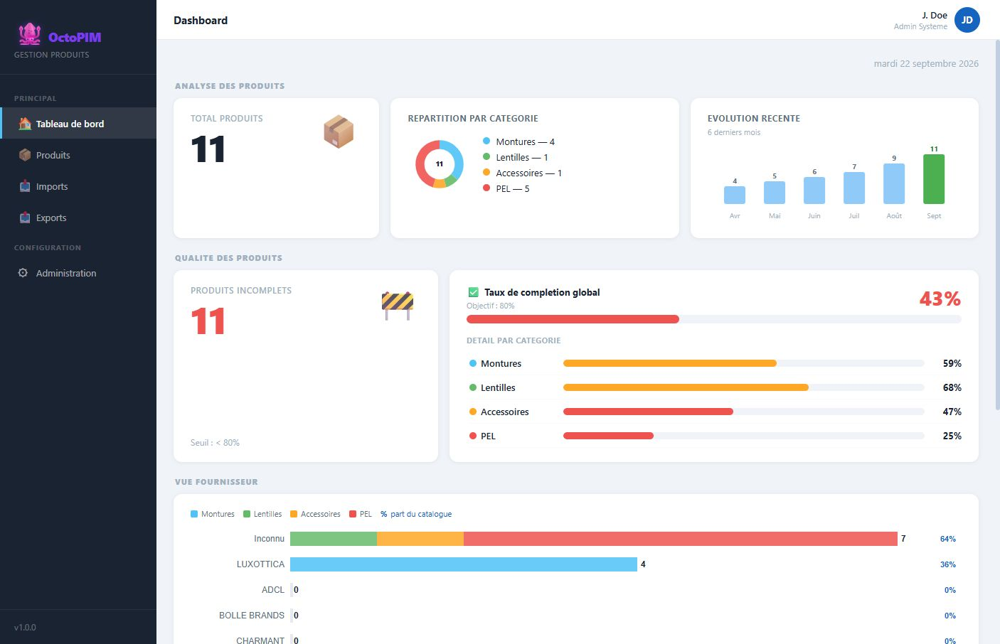

Dashboard
Vue de pilotage : volume du catalogue, completude, repartition par categorie et par fournisseur.
Qu’est-ce que le dashboard ?
La page d’accueil. Elle ne sert pas a saisir : elle alerte (produits incomplets) et donne un ordre de grandeur.

A quoi ça sert ?
- Savoir combien de references sont dans le perimetre de l’utilisateur.
- Mesurer la qualite (taux de completion vs seuil, defaut 80 %).
- Entrer dans la liste des incomplets en un clic.
- Voir le poids des fournisseurs dans le catalogue.
Comment ça marche
| Indicateur | Lecture | Statut |
|---|---|---|
| Total produits | Produits des categories accessibles. Clic → liste. | Maquette |
| Repartition par categorie | Donut du catalogue visible. | Maquette |
| Evolution 6 mois | Le mois courant = stock reel. Les mois passes sont illustratifs. | Maquette Cible source temporelle reelle a specifier |
| Produits incomplets | Completion < seuil. Clic → liste filtree. | Maquette |
| Completion globale / par categorie | Moyenne des taux, hors attributs systeme. | Maquette |
| Vue fournisseur | Volume par fournisseur et part du catalogue. | Maquette |
Regles
RG-DSH-01 — Tous les indicateurs respectent le perimetre de droits de l’utilisateur.
RG-DSH-02 — Le seuil de completion est parametrable (Administration > Preferences).
RG-DSH-02 — Le seuil de completion est parametrable (Administration > Preferences).